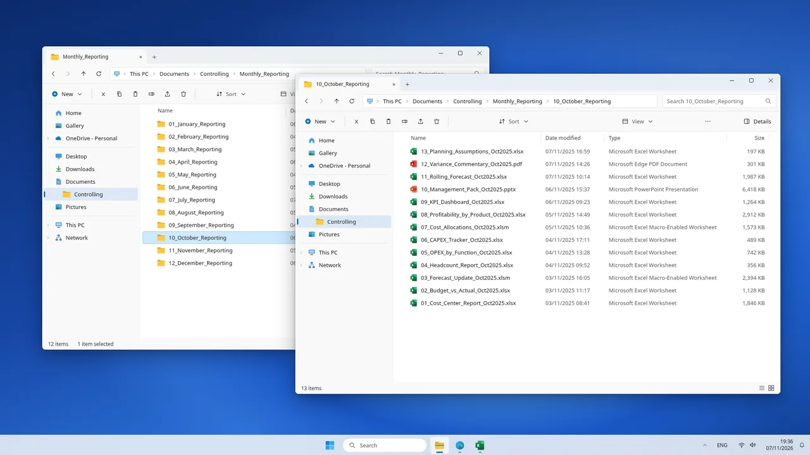
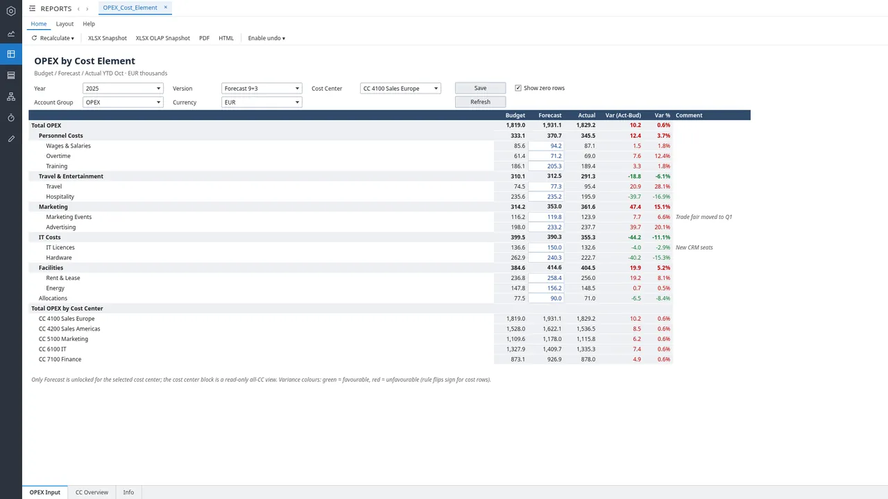
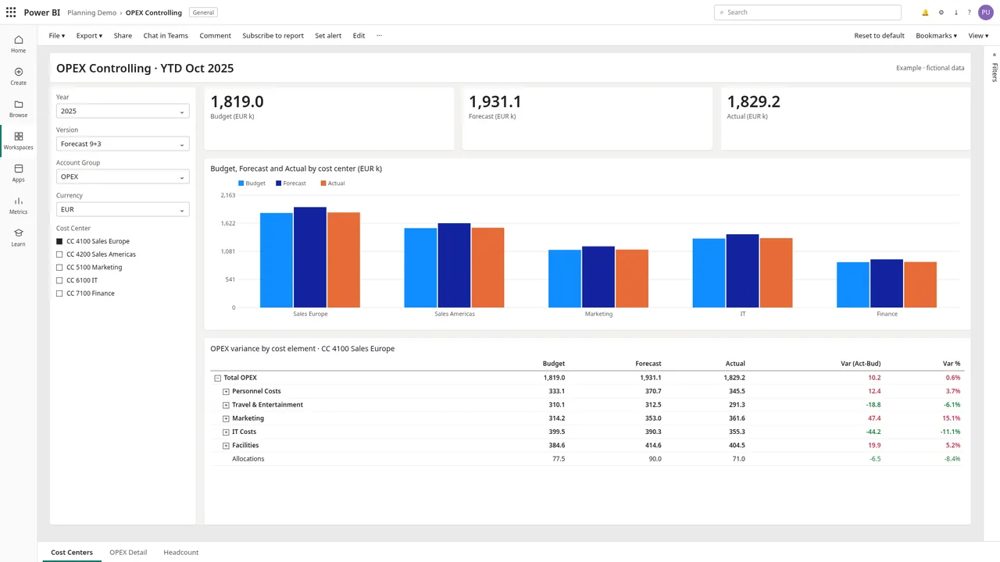
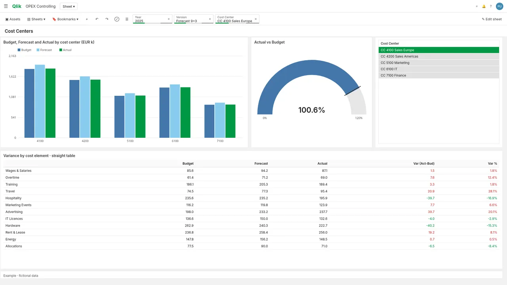

Typical scenario
Controlling and OPEX
Aim: forecast round across 120 cost centers in 5 days instead of 10 Estimated impact
A typical OPEX forecast round at a mid-size precision equipment manufacturer: about EUR 500m revenue, 120 cost centers.
- Jedox
- Snowflake
- Power BI
- Qlik Sense
- Excel VBA
Before and after Estimated impact
BeforeAfter
Illustrates a typical goal, not a promised result.
Challenge
- Forecasts collected through 120 emailed Excel templates.
- Allocations and commentary rebuilt for every management pack.
- Budget, forecast and actual held in separate files.
Impact
- Goal: no more template chasing by email.
- Goal: management pack built from one source.
Solution
- JedoxOPEX input form: forecast open only for the selected cost center, all-cost-center view read-only.
- SnowflakeActuals by cost center and cost element.
- Power BIBudget, forecast and actual by cost center with a variance matrix.
- Qlik SenseComparison chart, Actual vs Budget gauge and variance table.
- Excel VBABuilds the appendix tables of the management pack.
Screenshots
Mockups with fictional data.







